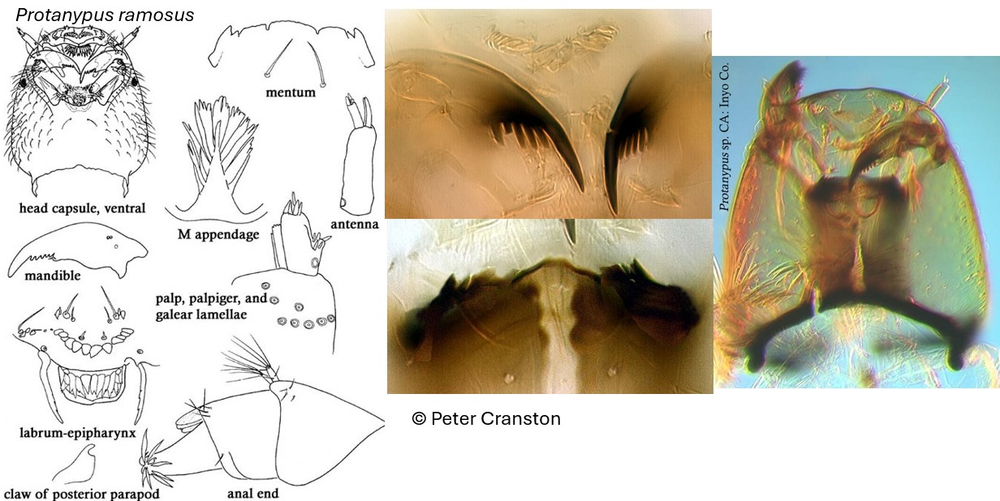

Protanypus (Kieffer, 1906)

Mentum
Pas de dents en zone médiane. 2 paires de dents latérales extrêmes présentes. Dent latérale externe pointue (ou bifide). Plaques ventromentales petites.
Mandibules
Dent apicale plus longue que la largeur combinée des 5 dents internes.
Labre
SI et SII courtes et simples. Peigne de l’épipharynx composé de 3 écailles grossièrement dentelées à pointues. Prémandibules étroites, droites avec des dents internes faibles ; épine latérale absente
Ecologie
Les larves sont rencontrées dans les lacs ultra-oligotrophes.
Espèces recensées en France
? : Présence incertaine.